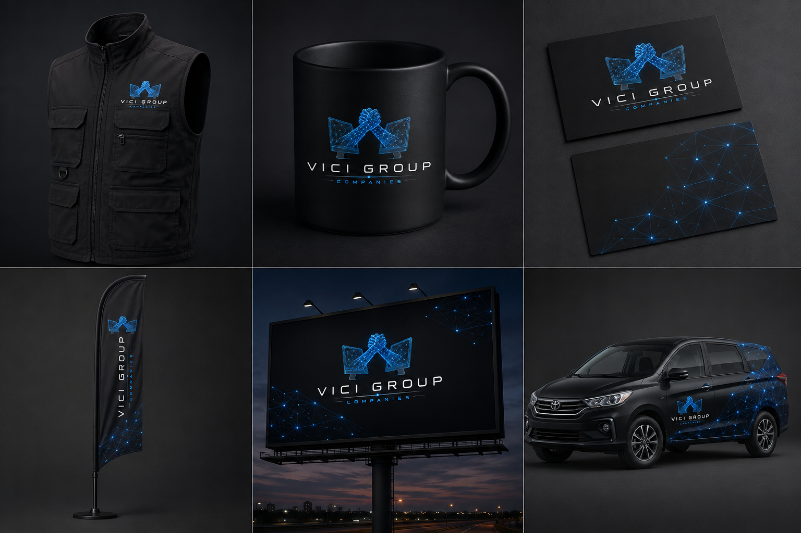
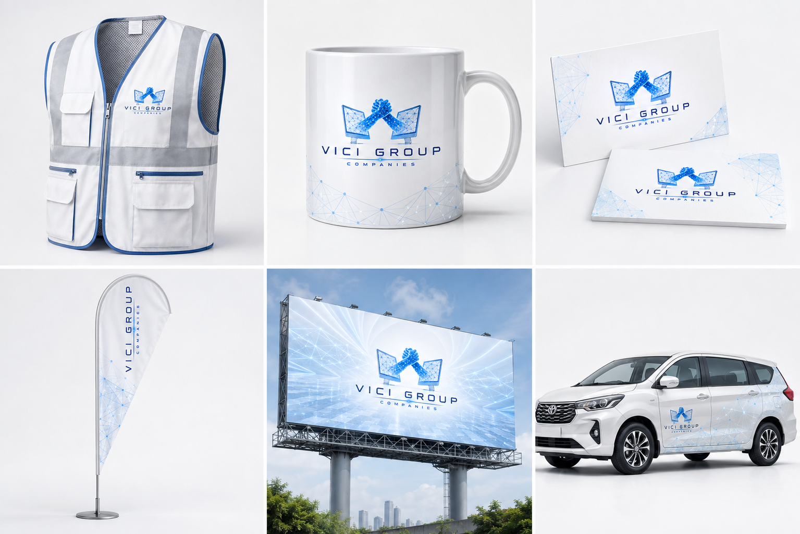

Research and delivery design
A Uganda-focused opportunity report, operating model, partner map, 90-day execution plan, claims ledger, technical scan and portfolio packaging plan.
Phone- and browser-first property evidence for people who cannot inspect a place in person. The first target is a tightly scoped Uganda property pilot that runs on devices people already have.
An authorized property is captured once, organized into a clear browser experience, and used for self-guided review or a live guided session.
The proposed service combines structured visual capture, room-to-room navigation, evidence notes, lead handoff and a low-bandwidth fallback. It is intended for local and diaspora buyers, property owners, developers and agents who lose time or trust when an inspection cannot happen in person.
Founder role: Charles Oriokot is leading product framing, systems architecture, evidence design and pilot preparation.
A Uganda-focused opportunity report, operating model, partner map, 90-day execution plan, claims ledger, technical scan and portfolio packaging plan.
Secure a property with clear capture rights, complete ten customer interviews, build one working phone/browser tour and obtain a signed pilot or letter of intent.
This is an original synthesis and an unproven operating method. It uses successive gates so discovery, build, pilot, rights, economics and public language move together.
Start with a specific buyer, operating pain and repeat budget.
Confirm capture, data, property, image and relationship rights before building.
Measure use, outcome, willingness to pay and the real adoption constraint.
The current research focuses on repeatable capture, clear review, guided handoff, low-bandwidth delivery and consented analytics. The imagery below records brand development only.

